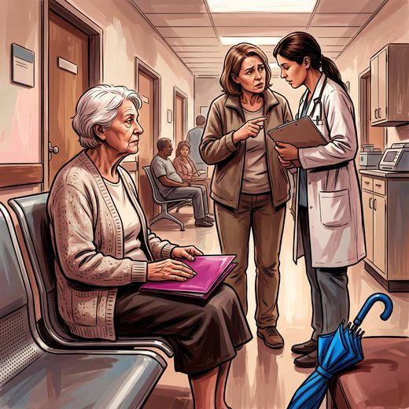

Consulta rápida à beira do leito
Condutas, doses e interações.
Referências da aula · 6
- Katz S, Ford AB, Moskowitz RW, Jackson BA, Jaffe MW. Studies of illness in the aged. The index of ADL: a standardized measure of biological and psychosocial function. JAMA. 1963;185:914-9. PMID 14044222.PubMed
- Lawton MP, Brody EM. Assessment of older people: self-maintaining and instrumental activities of daily living. Gerontologist. 1969;9(3):179-86. PMID 5349366.PubMed
- Lino VTS, Pereira SRM, Camacho LAB, Ribeiro Filho ST, Buksman S. Adaptação transcultural da Escala de Independência em Atividades da Vida Diária (Escala de Katz). Cad Saude Publica. 2008;24(1):103-12. PMID 18209838.PubMed
- Inouye SK, Studenski S, Tinetti ME, Kuchel GA. Geriatric syndromes: clinical, research, and policy implications of a core geriatric concept. J Am Geriatr Soc. 2007;55(5):780-91. PMID 17493201. doi:10.1111/j.1532-5415.2007.01156.x.PubMedDOI
- Covinsky KE, Palmer RM, Fortinsky RH, Counsell SR, Stewart AL, Kresevic D, et al. Loss of independence in activities of daily living in older adults hospitalized with medical illnesses: increased vulnerability with age. J Am Geriatr Soc. 2003;51(4):451-8. PMID 12657063.PubMed
- Freitas EV, Py L, organizadores. Tratado de Geriatria e Gerontologia. 5ª ed. Rio de Janeiro: Guanabara Koogan; 2022.